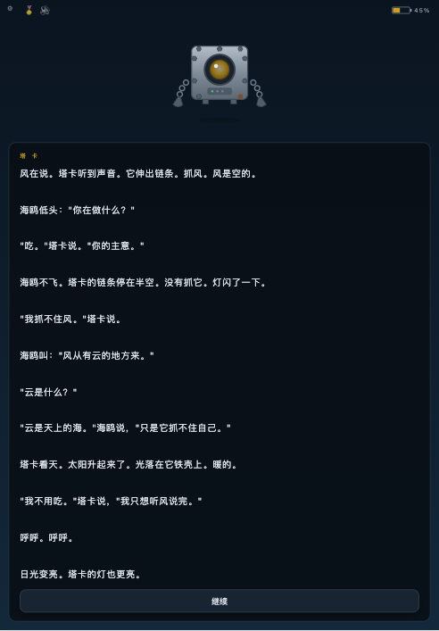

你亮，它就亮。
塔卡只是那面镜子。所有的智慧、勇气和好奇心，都在孩子手里。
![扫码体验塔卡]()
现在就能体验 →
ameliacai67.github.io/TAKA_tales
手机 / iPad 打开，点一下，替塔卡听听风声。
ameliacai67.github.io/TAKA_tales
手机 / iPad 打开，点一下，替塔卡听听风声。
AI 互动童话 · 给 3-6 岁孩子的第一面镜子
我们不造神，我们造镜子。镜子不会塌房。
传统内容工业把价值绑在「完美的人」身上——明星、IP、创作者。人设一崩，商业体跟着崩。高消耗，不可持续。
绘本和动画只能看。孩子没有选择权，自主性、好奇心无处安放。
自由生成的 AI 可能输出宗教、暴力、性别刻板。没有护栏的 AI，进不了儿童房。
塔卡没有嘴，水下靠螺旋桨。模型自己会说「没有嘴，不能吃」——设定从禁止项变成灵感源。
每个 AI 场景带 beats 要点清单。剧情走向和结局写死，AI 只负责 100-150 字的文笔。
每次调用注入：不牺牲、不刻板、不说教、「你决定」。宗教词替换为能量/信号/记忆库。
不评判孩子的黑暗，把黑暗变成诗。

故事骨架写死在文件里：分支、选项文案、电量、双结局——AI 碰不到。
DeepSeek 填空式生成中段场景，15s 超时 + 失败静默回退内置文案，断网可玩。
浏览器本地 TTS：角色声线差分（塔卡慢、海鸥快、老机器沉），家长可调基础语速。
选项 C：孩子打字或说话，「选择必须生效」——先接住，再把故事引回主线。
价值观红线 prompt 级注入，6 条禁令 + 替代方案，两轮回归测试零事故。
基础语速滑块、语音总开关、对话记录可查看（愿景）——家长是决策层。
市场：3-6 岁中文启蒙 AI 内容入口——大厂嫌慢嫌重的赛道；25-35 岁家长为「安全 + 教育价值」付费，决策链短。
开发节奏：单章 3–5 天，语音输入 + 状态机 + TTS 技术栈全复用
塔卡只是那面镜子。所有的智慧、勇气和好奇心，都在孩子手里。